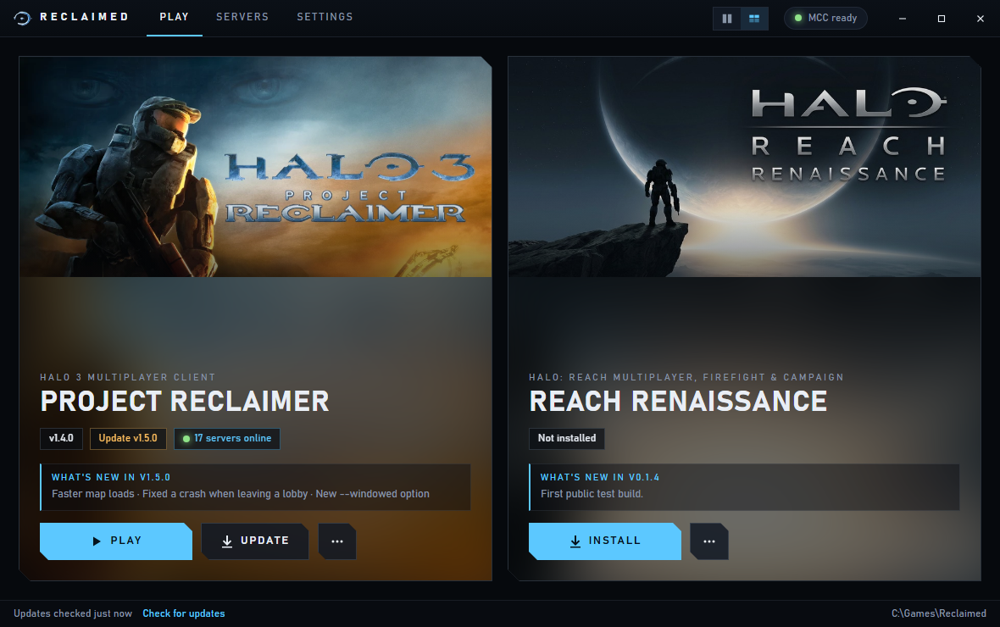
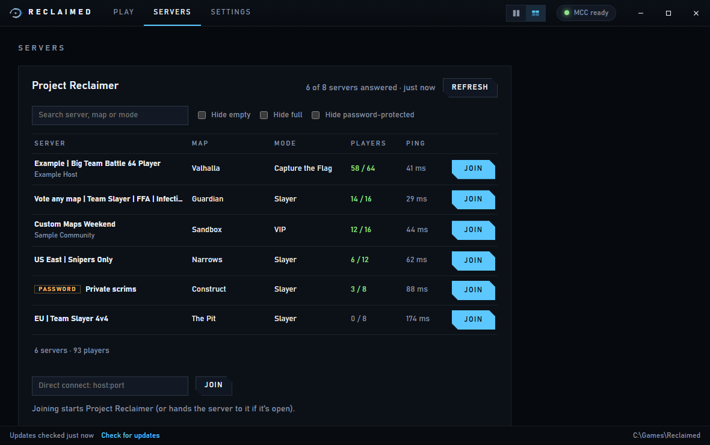
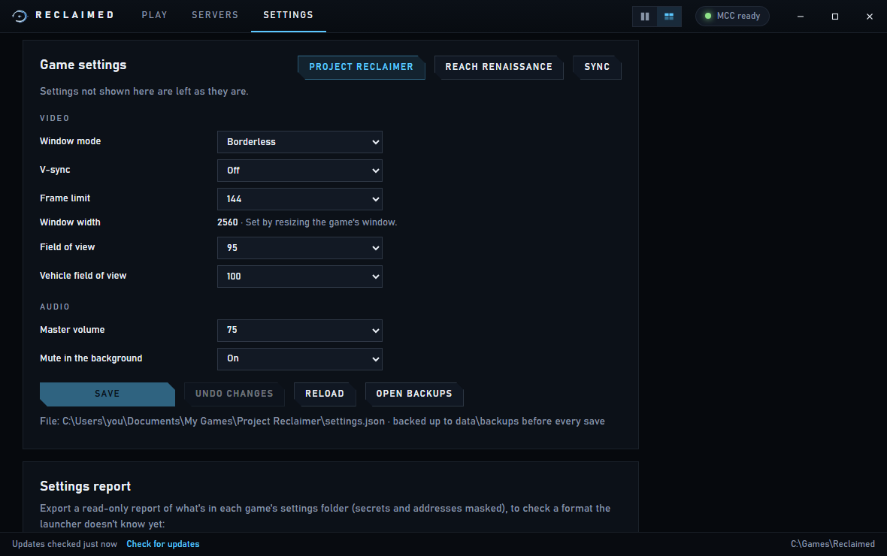
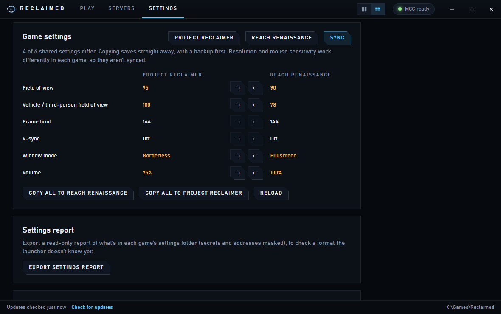

Free launcher for Windows
Halo 3 and Halo: Reach multiplayer, a few clicks away
Reclaimed installs and runs Project Reclaimer (Halo 3) and Reach Renaissance (Halo: Reach) for you, keeps them up to date, and shows you which Halo 3 servers are full of players.
Download for WindowsWhat you need first
Reclaimed runs on top of the Halo games you already own on Steam.
✓A Windows PC
Windows 10 or Windows 11.
✓Halo: MCC on Steam
Halo: The Master Chief Collection, bought and installed through Steam.
✓Halo 3 and/or Halo: Reach
Turned on inside MCC. In Steam: right-click MCC, choose Manage then DLC, and tick them.
How to install
About five minutes, plus the game download. You only do this once.
-
1
Download Reclaimed
Click the big blue Download for Windows button at the top of this page.
Your browser may say the file "isn't commonly downloaded". That's because Reclaimed is new and made by a fan, not because something is wrong. Click Keep (in Edge you may need to click … first, then Keep and Keep anyway).
-
2
Give it its own folder
Reclaimed keeps the games next to itself, so it needs a folder of its own.
On your desktop, right-click an empty spot, choose New then Folder, and name it Reclaimed. Then open your Downloads folder and drag Reclaimed.exe into that new folder.
-
3
Open it
Double-click Reclaimed.exe. The first time, Windows shows a blue box saying "Windows protected your PC". Click More info, then Run anyway. You won't see this again.
A drawing of what you'll see: first click "More info", then "Run anyway".
-
4
Install a game and play
Reclaimed finds Halo MCC by itself. Under the game you want, press Install and wait for the download to finish, then press Play.
Next time, just open Reclaimed and press Play. When a game has an update, an Update button appears.
Want it on your desktop or in Steam? Press Desktop shortcut or Add to Steam in the tip at the top of Reclaimed.
What it looks like
Everything in one window.




Questions
The things people ask most.
Is it safe? Why does Windows warn me?
Windows warns about any program that isn't "signed", which costs money every year, so most small fan-made programs show the warning. Reclaimed is open source: anyone can read its code on GitHub. It only downloads the games from their official pages and checks every download before using it.
Does it cost anything?
No. Reclaimed, Project Reclaimer and Reach Renaissance are all free. You do need to own Halo: The Master Chief Collection on Steam.
Will it mess with my Steam or MCC install?
No. It never changes Steam, MCC or the games' files. Everything it downloads goes into the Reclaimed folder you made. The only other thing it touches is each game's own settings file, and only when you change a setting in Reclaimed (it keeps a backup first). The first time it starts a game, it also sets the game to borderless fullscreen if you haven't picked a window mode yourself.
How do I join my friends?
For Halo 3, open the Servers tab, find their server and press Join, or type its address under Direct Connect. For Halo: Reach, start the game and use its own server browser.
How do I update Reclaimed itself?
When there's a new version, Reclaimed shows a bar at the top with an Update now button. Press it and Reclaimed updates itself and restarts; your games and settings stay where they are. (Version 0.4.1 and older can't do this yet: close Reclaimed, download it again from this page, and replace the old Reclaimed.exe in your Reclaimed folder.)
It says MCC wasn't found.
Make sure Halo MCC is installed in Steam and that Steam is installed normally. If MCC is on another drive or folder, go to Settings in Reclaimed and press Choose folder… to point it at MCC.
Something went wrong. Where do I get help?
Ask whoever sent you this page, or report a problem on GitHub. It helps to attach the file data\launcher.log from your Reclaimed folder.